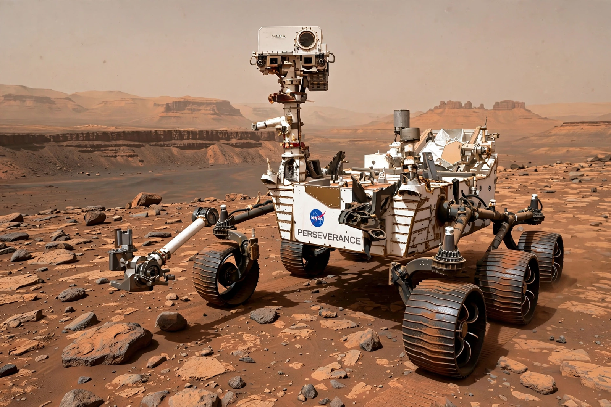

NASA Science · Missions
| Mars 2020 / Perseverance | |
|---|---|
| Operator | NASA (JPL) |
| Launch | 30 July 2020 |
| Landing | 18 February 2021, Jezero Crater |
| Cargo | Perseverance rover and Ingenuity helicopter |

Mars 2020 is the NASA mission that delivered the Perseverance rover to Jezero Crater on Mars in February 2021. Perseverance is a car-sized, nuclear-powered rover based on the Curiosity design, tasked with seeking signs of ancient microbial life in a crater that once held a lake and river delta.
Perseverance is sealing samples of rock and regolith in tubes — the first stage of a planned Mars sample-return effort whose architecture and schedule have been under revision. Its small technology-demonstration helicopter, Ingenuity, far exceeded expectations, making dozens of flights instead of the planned five before its mission ended in 2024 after rotor damage.